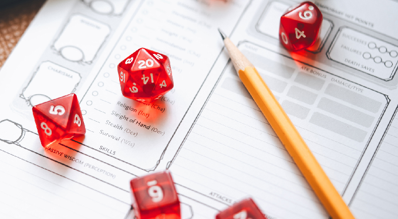

Play as a Character
Playing as a character in Dungeons and Dragons gives you the opportunity to create a character you have always wanted to adventure with. There are nearly limitless ways to play as a character, but in the most basic form, gameplay looks like this:
- Interact with players and non-playable characters or the environment
- Roll dice to determine success in interactions
- Apply the outcome of interactions
Though that is the main gameplay of how a player will play the game, it all has to start somewhere, and that start is character creation. Character creation will help start a base for how well a player will perform in interactions based on specific skills given to the character in creation.
Character Creation
As previously mentioned, character creation will determine your abilities and inturn is what influences your rolls during interactions. During character creation you will decide many things such as species (previously known as race), class, background, and appearance.
Previous iterations of Dungeons and Dragons had race rather than species and race played a big part in deciding what to play as because each race had different abilities assigned to them. The current version of Dungeons and Dragons has changed that by making all Species have the same benefit of being able to choose ability specilizations. Class is now the biggest determining ability score factor.
Classes
Classes determine the occupation of the created character and dictate the specialization. When thinking of famous fantasy characters, you can break that character down to what their class would be in Dungeons and Dragons. Take Gandalf from *Lord of the Rings* as an example—Gandalf would be a wizard! This will be the most important decision you make in character creation because it will help you determine which abilities to invest in. A breakdown of classes and their main abilities can be found below.
| Class | Overview | Primary Ability | Difficulty |
|---|---|---|---|
| Barbarian | Barbarians are mighty warriors who are powered by primal forces of the multiverse that manifest as a Rage | Strength | Normal |
| Bard | Invoking magic through music, dance, and verse, Bards are expert at inspiring others, soothing hurts, disheartening foes, and creating illusions | Charisma | High |
| Cleric | Clerics draw power from the realms of the gods and harness it to work miracles | Wisdom | Normal |
| Druid | Druids belong to ancient orders that call on the forces of nature. Harnessing the magic of animals, plants, and the four elements | Wisdom | High |
| Fighter | Fighters rule many battlefields they all share an unparalleled prowess with weapons and armor | Strength or Dexterity | Low |
| Monk | Monks use rigorous combat training and mental discipline to align themselves with the multiverse and focus their internal reservoirs of power | Dexterity or Wisdom | High |
| Paladin | Paladins are united by their oaths to stand against the forces of annihilation and corruption | Strength and Charisma | Normal |
| Ranger | Far from bustling cities, amid the trees of trackless forests and across wide plains, Rangers keep their unending watch in the wilderness | Dexterity and Wisdom | Normal |
| Rogue | Rogues rely on cunning, stealth, and their foes’ vulnerabilities to get the upper hand in any situation | Dexterity | Low |
| Sorcerer | Sorcerers wield innate magic that is stamped into their being. Some Sorcerers can’t name the origin of their power, while others trace it to strange events in their personal or family history | Charisma | High |
| Warlock | Warlocks quest for knowledge that lies hidden in the fabric of the multiverse. Warlocks piece together arcane secrets to bolster their own power | Charisma | High |
| Wizard | Wizards are defined by their exhaustive study of magic’s inner workings. They cast spells of explosive fire, arcing lightning, subtle deception, and spectacular transformations | Intelligence | Normal |
Abilities
After reading through this page I'm sure you want a breakdown of what an "Ability" is. In Dungeons and Dragons, abilites are what determine how good or bad you are at something. There are 6 abilities in total that can have a value between 1 and 20, 1 meaing you are very bad and 20 meaning you are very good. The following are the abilities and what they effect:
- Strength - How Physically Strong you are
- Dexterity - How agile a character is
- Constitution - Overall health and physical capability
- Intelligence - How smart a character is in regards to book smarts
- Wisdom - Smart in practicality terms, street smarts
- Charisma - Force of your personality
So a character with a strength of 16 would be able to lift heavy objects much easier than another with a strength of 1.
After chosing your class, you will determine what skills are important to that class and you will assign abilities based on importance. There are a number of ways to determine ability score and everryone has there preference. the two main ways are to either roll dice and determine the ability number by adding the dice up, another way is point buy where you increasae abilities from 10 until you run out of alloted points to spend.